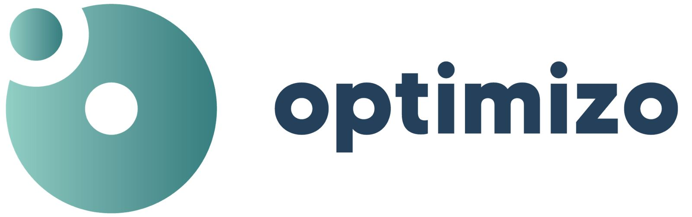

Logo en Poppins y tipografía de sistema
El logotipo pasa de Made Tommy a Poppins ExtraBold, convertido a trazos y con las proporciones medidas del original. Las páginas y la app usan la tipografía de Apple donde existe y Inter en el resto.
Antes y después

Sobre fondos de la marca
Variantes en un color
Piezas sueltas
Tipografías
Poppins ExtraBoldSolo el logo · ya convertida a trazos, no se instala
No se usa en titulares ni textos: así el logo queda único y no compite con nada.
Texto · SF Pro / InterPáginas, app, documentos y formularios
Soluciones tecnológicas que optimizan tu empresa
Optimizo Recursos · Tiempo · Procesos
Te acompañamos en la transformación digital de tu negocio, optimizando y rentabilizando tus operaciones.
1.234.567 · 98,6 % · 10/10/2026 · $ 15.990
En Mac y iPhone se ve SF Pro (la del sistema, sin licencia que pagar porque no la distribuimos). En Windows, Android y PDFs se ve Inter, diseñada a la par de SF.